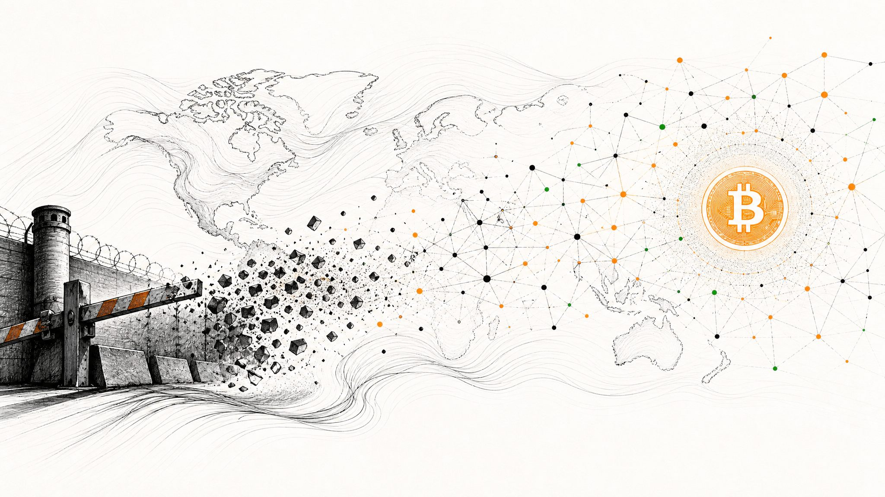

Bitcoin, Human Rights, and Freedom Tech.
Research, writing, and talks on how open monetary and communication networks help people resist censorship and financial repression.
4 books · 150+ talks & interviews · Work featured in NYT, WSJ, TIME, CNN, The Atlantic, WIRED, The Journal of Democracy, and beyond


Bio
Who is Alex Gladstein?
Alex Gladstein is Chief Strategy Officer at the Human Rights Foundation. He writes and speaks globally about human rights, free expression, and how open technologies like Bitcoin can protect civil liberties. He is the author of Check Your Financial Privilege and co-author of Hidden Repression, and his work focuses on helping people and institutions understand censorship resistance, financial freedom, and freedom technology.
Start Here
Five pieces to understand Alex’s thesis
Content Highlights
Featured Work
“Bitcoin is freedom money.”
“What if anyone, anywhere, could send or receive value without permission?”
“Freedom technology helps peaceful people coordinate without gatekeepers.”
“Open monetary networks are becoming civil society infrastructure.”
“How Bitcoin Is Freeing People in China, Venezuela, Iran, and America.”
“Can Fedimints Help Bitcoin Scale to the World?”
“Currency of Last Resort.”
“Structural adjustment is how global finance extracts from the poor.”
“The Economics of War.”
“Demystifying the Petrodollar Scheme.”
“Bitcoin’s killer app is defending human rights.”
“The biggest privilege in the world is stable money.”
“Financial repression is a human-rights issue.”
“Autocrats fear open systems.”
“The IMF and World Bank often entrench extraction, not freedom.”
“When money is weaponized, ordinary people need alternatives.”
“Open protocols matter because rights need neutral infrastructure.”
“Nostr points toward censorship-resistant social media.”
“Bitcoin and human rights are not separate conversations.”
“A Trojan Horse for Freedom.”
— Alex Gladstein